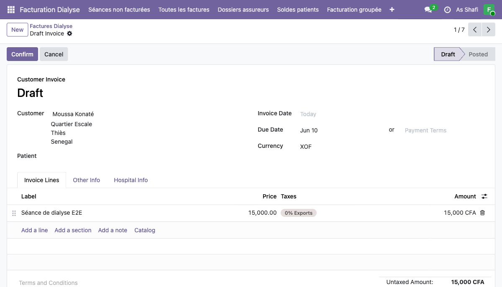
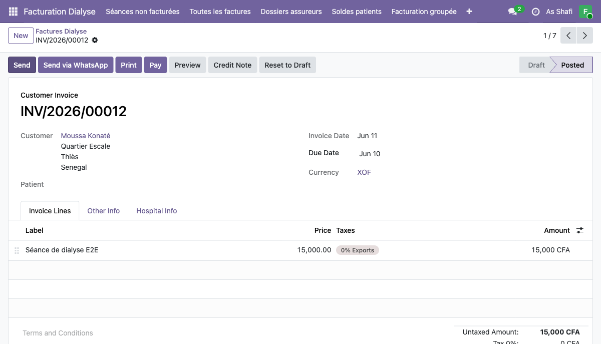
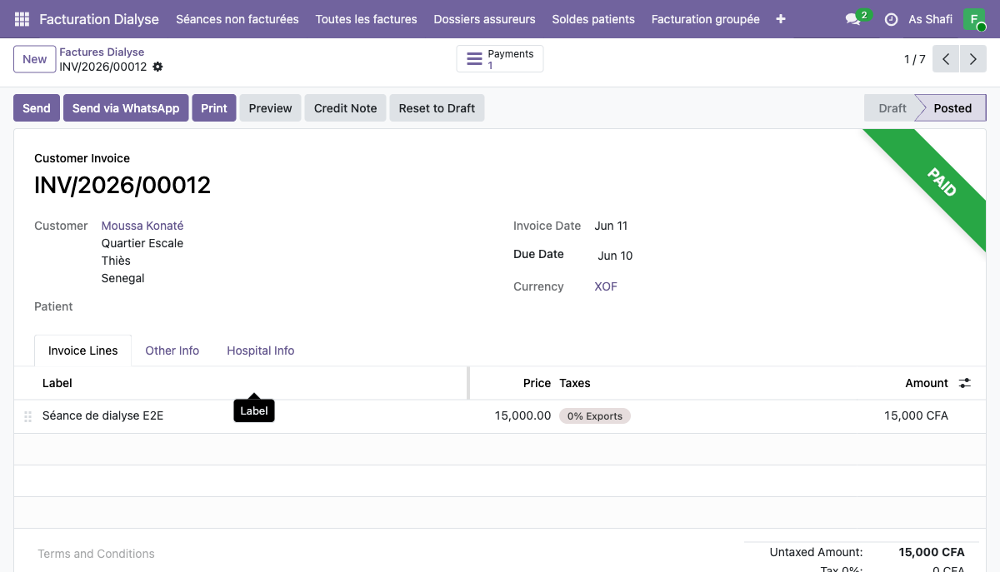
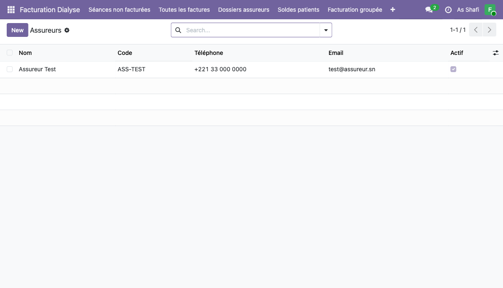
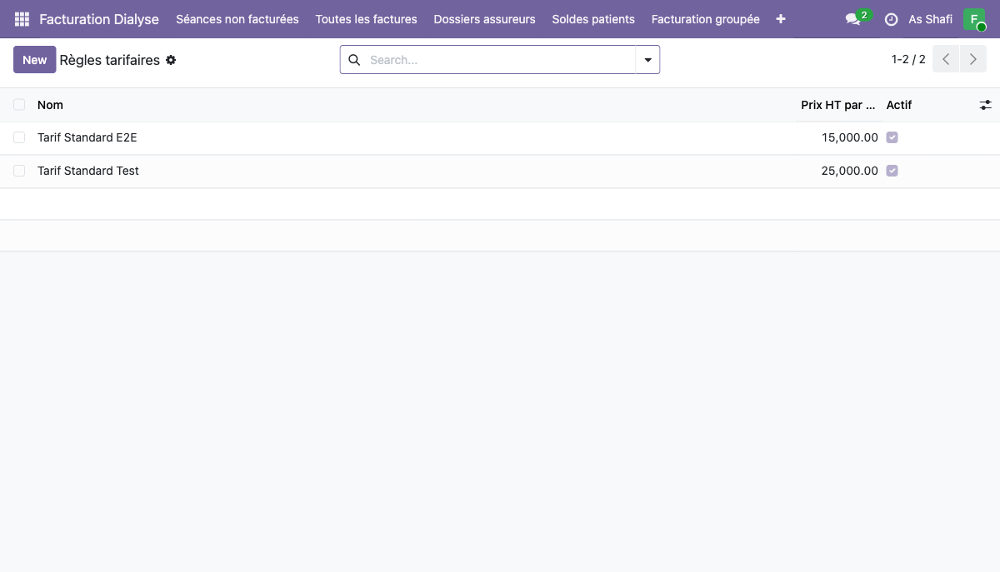
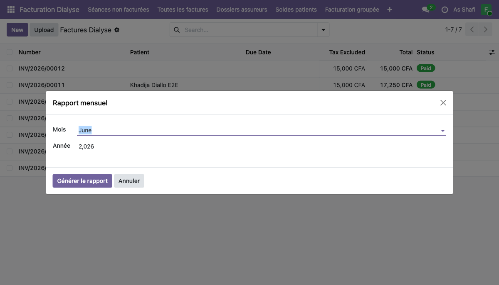

En tant qu'agent de facturation, vous gérez l'ensemble du cycle de facturation des séances de dialyse : création des factures, confirmation, enregistrement des paiements, gestion des dossiers assureurs et production des rapports financiers mensuels.
Vue d'ensemble de l'interface facturation
Dès votre connexion, vous êtes redirigé vers le module Factures Dialyse. La barre de navigation en haut de page donne accès à toutes les fonctionnalités de facturation.
Cycle de vie complet d'une facture dialyse :
Brouillon
Confirmée
Payée
Créer une facture dialyse
La création manuelle d'une facture est utile pour les cas particuliers ou les corrections. Dans le flux normal, les factures sont générées automatiquement depuis les séances non facturées.

- a Naviguez vers Toutes les factures et cliquez sur New
- b Sélectionnez le Customer (patient) dans le menu déroulant
- c Dans l'onglet Invoice Lines, cliquez sur Add a line
-
d
Sélectionnez le produit
Séance de dialyse E2E— le prix unitaire15 000 CFAse renseigne automatiquement - e Vérifiez les onglets : Invoice Lines (lignes), Other Info (conditions de paiement), Hospital Info (données médicales liées)
-
f
Sauvegardez — la facture reste en statut
Draftjusqu'à confirmation
Valider (confirmer) une facture
La confirmation transforme le brouillon en facture officielle, lui attribue un numéro séquentiel
(ex. INV/2026/00012) et la rend visible dans la comptabilité.

-
a
Depuis la facture en statut
Draft, cliquez sur le bouton Confirm -
b
La facture passe au statut
Postedet reçoit son numéro officiel (INV/2026/00012) - c Les actions disponibles sont maintenant :
Enregistrer un paiement
L'enregistrement du paiement solde la facture et la fait passer au statut Paid. Un bandeau vert confirme visuellement le statut et un smart button Payments 1 apparaît pour accéder au détail du paiement.

-
a
Depuis la facture confirmée (
Posted), cliquez sur Pay - b Un dialog de paiement s'ouvre — renseignez les champs :
Dialog — Enregistrement du paiement
Bank
15 000 CFA
INV/2026/00012)
- c Cliquez sur Create Payment
-
d
La facture passe au statut
Paid— un bandeau vert PAID apparaît en haut - e Le smart button Payments 1 permet d'accéder au détail de l'écriture comptable
In Payment jusqu'au solde complet.
Assureurs et dossiers de prise en charge
Le module gère les organismes d'assurance et leurs dossiers de prise en charge patients. Chaque assureur peut avoir plusieurs dossiers actifs correspondant à des patients différents.

Fiche assureur de référence :
| Champ | Valeur |
|---|---|
| Nom | Assureur Test |
| Code | ASS-TEST |
| Téléphone | +221 33 000 0000 |
| test@assureur.sn |
- a Accédez à Configuration > Assureurs pour gérer la liste des assureurs partenaires
- b Cliquez sur New pour créer un nouvel assureur — renseignez le nom, le code, les coordonnées
- c Accédez à Configuration > Dossiers assureurs pour les dossiers de prise en charge
- d Chaque dossier lie un Patient à un Assureur avec un taux de couverture et une période de validité
Règles tarifaires
Les règles tarifaires définissent les prix applicables par type de séance. Elles sont appliquées automatiquement lors de la génération des factures depuis les séances.

| Règle tarifaire | Montant | Applicable à |
|---|---|---|
| Tarif Standard E2E | 15 000 CFA | Séance de dialyse End-to-End standard |
| Tarif Standard Test | 25 000 CFA | Séance de test / protocole spécial |
Générer le rapport mensuel
Le rapport mensuel PDF compile l'ensemble des factures d'un mois donné et produit un document de synthèse téléchargeable pour la comptabilité et la direction.

- a Accédez à Rapports > Rapport mensuel PDF
-
b
Un wizard s'ouvre — sélectionnez le Mois (ex.
June) et l'Année (ex.2026) - c Cliquez sur Générer le rapport
- d Le PDF est généré et téléchargé automatiquement — il contient le récapitulatif de toutes les factures du mois
Soldes patients et facturation groupée
Ces deux outils permettent d'optimiser le traitement en masse des opérations de facturation.
Soldes patients
- a Accédez à Soldes patients pour visualiser l'état des créances par patient
- b La vue liste indique le montant total dû, les factures en retard et le dernier paiement reçu
- c Cliquez sur un patient pour accéder directement à ses factures impayées
Facturation groupée
- a Accédez à Facturation groupée pour traiter toutes les séances non facturées en une seule opération
- b Sélectionnez la période et les patients concernés (ou laissez la sélection complète)
- c Cliquez sur Générer les factures — une facture est créée pour chaque patient ayant des séances non facturées sur la période